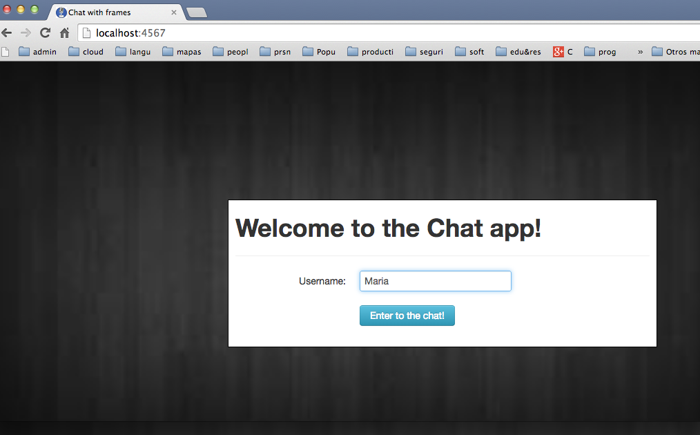
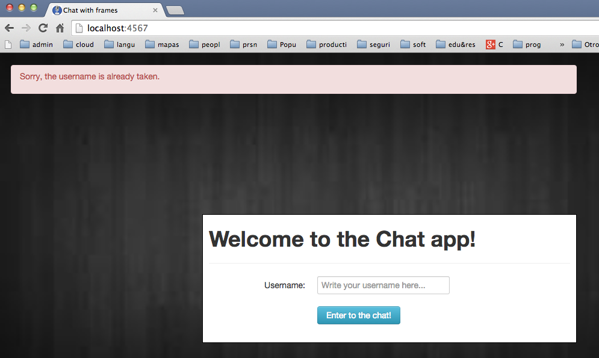
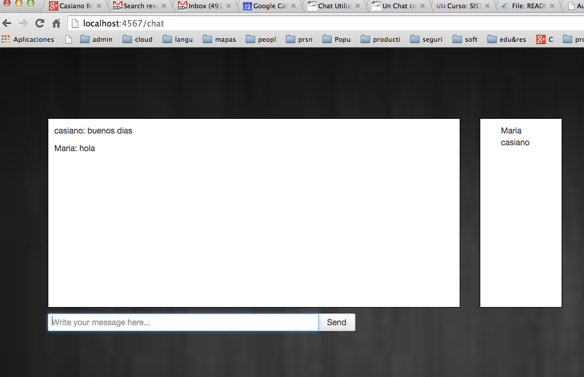

Práctica: Chat Usando Ajax y jQuery
Modifique el chat visto en la sección
Un Chat con Ajax y JQuery 41.4
para que:
- Deberán registrarse los usuarios

- Si el nombre del usuario esta tomado se señalara el error y se le pedirá que cambie de nombre

- Una vez en el chat:
- En un contenedor aparecen los nombres de usuario
- En otro los mensajes
- En un tercero con un botón
send la entrada para el siguiente mensaje
del usuario

- Escriba las pruebas. Use Selenium
- Despliegue las pruebas en Travis
- Haga un análisis de cubrimiento usando Coveralls
Repase la sección Coveralls: Análisis de Cubrimiento
20.7
- Despliegue en Heroku
Estos enlaces pueden ser de ayuda:
- Un Chat con Ajax y JQuery 41.4
- Código del chat en GitHub
- BootStrap 75.1
- Integración Contínua: Travis 20
- Build a Sinatra API Using TDD, Heroku, and Continuous Integration with Travis 35.0.2
- Sample app with Sinatra Rspec Capybara and Selenium 35.0.4
- Capybara 18
- Coveralls: Análisis de Cubrimiento 20.7
- Ajax 63
Casiano Rodriguez León
2014-11-17